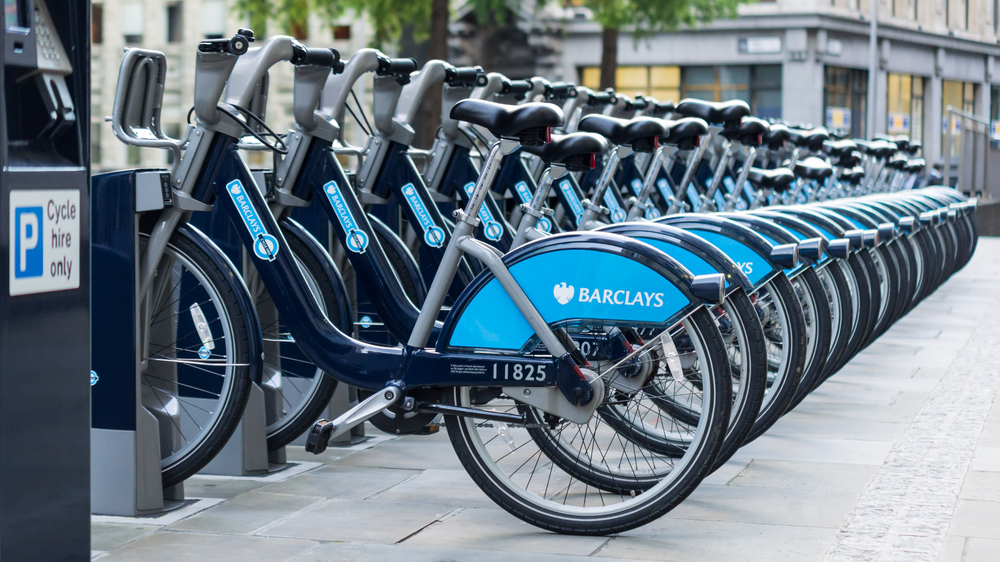

Este livro aborda a ocupação norte-americana do território japonês após o fim da Segunda Guerra Mundial e a rendição do Japão aos termos
da Declaração de Potsdam, focando-se nas reformas políticas e sociais promovidas pelos Estados Unidos. Cada uma dessas reformas buscava mudar
a maneira de pensar do povo japonês através da ideia de que o erro da população havia sido confiar nas autoridades militares que arrastaram o
país para a guerra, tendo agora uma segunda chance oferecida pelos EUA para se tornarem uma nação pacífica. Essa ideia se tornou o cerne do
posicionamento internacional do Japão após o fim da ocupação.
O capítulo aplica o método da Análise Qualitativa Comparada (QCA) ao questionar em quais conjuntos de condições causais o soft power de uma
nação parece auxiliar na produção de resultados políticos internacionalmente. Duas combinações causais emergiram como suficientes para dois
Estados apresentarem um padrão de votações semelhante na AGNU: (1) a presença simultânea de altos índices de opiniões positivas e de baixos
índices de opiniões negativas (ambos associados ao soft power de uma nação); e (2) a presença simultânea de altos índices de opiniões positivas
e alianças formais entre os Estados.
Capítulo 14 da obra "Desigualdade e Ciência Política" (2021).

A imobilidade urbana surge hoje como um dos principais elementos que previnem populações periféricas de efetivamente participarem da vida e
produção do espaço urbano. Conforme desmonstrado ao longo do capítulo, a ciclomobilidade apresenta o potencial para ajudar a superar as
inequidades no acesso ao transporte nas grandes metrópoles brasileiras, porém, o atual padrão de investimento público no modal acaba por
apenas reproduzir a exclusão já existente.
Capítulo 2 da obra "Direito à cidade, cidadania, governança urbana e bem-estar urbano: movimentos de insurgência e resistência" (2021).
Capítulo 4 da obra "Os Complexos Regionais de Segurança no Século XXI: conflitos, agendas e ameaças" (2016).